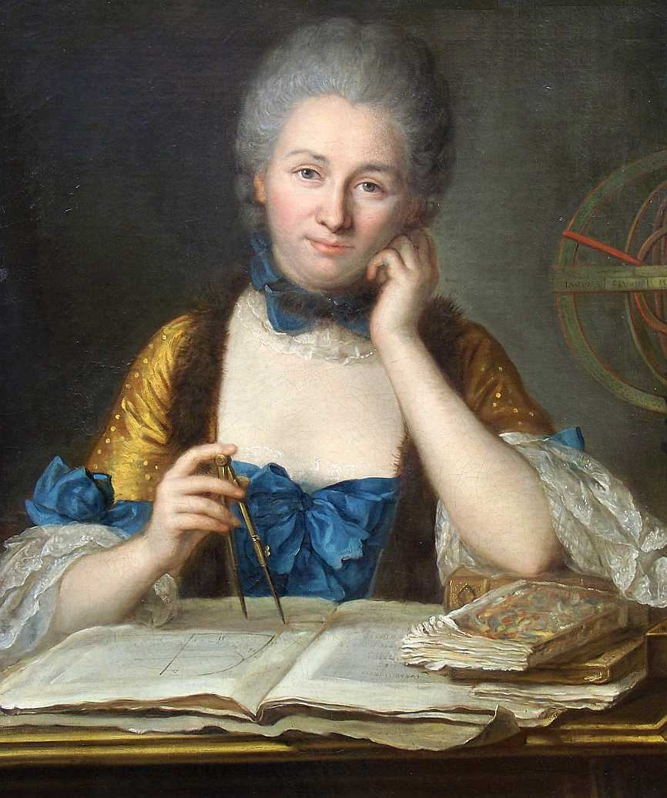

MNEMOSCIENCES
Les sciences à travers la mémoire
Apprendre les sciences en jouant,
c'est possible.

© 2026 MNEMART, Tours, France — —
Ambiance
MNEMOSCIENCES
Les sciences à travers la mémoire

Maître Fiole et Dame Loupe t'attendent pour t'apprendre à observer, à expérimenter et à comprendre le monde : la matière, le vivant, les objets techniques et la Terre. Attention : Maître Court-Circuit et Dame Fausse-Piste, eux, guettent la moindre erreur… Mais ils ne sont pas si méchants : ils veulent seulement que tu réussisses !
© 2026 MNEMART, Tours, France — —
Ce jeu t'attend.
Partie terminée
Le compte est commun à MNEMOSCIENCES, MNEMOMATHS, MNEMOGRAM et MNEMART : le supprimer efface toutes les données des quatre sites et l'accès à vos quatre espaces. Pour confirmer, écrivez votre mot de passe :
© 2026 MNEMART, Tours, France. Contenu original : les exercices, les explications, les figures, les jeux et les personnages ne peuvent être ni reproduits ni réutilisés sans autorisation.
Site à but non commercial, sans publicité, proposé à titre personnel et éducatif.
Les images de la page d'accueil sont issues de Wikimedia Commons et sont utilisées sous leurs licences respectives (domaine public ou Creative Commons selon les fichiers). Les sorciers sont des dessins originaux.
Les informations d'un compte (prénoms, photos, adresses e-mail, scores) ne sont visibles que par ce compte et servent seulement au jeu. Chacun peut les effacer lui-même, et supprimer son compte, dans 👤 Mon compte, rubrique « Mes données ».
Contact : contact@mnemart.fr
Pour toute question, suggestion ou signalement d'erreur, vous pouvez écrire à l'adresse suivante :
MNEMOSCIENCES aide à mémoriser les notions fondamentales des sciences et de la technologie en jouant, du CE1 à la 3e, en suivant la progression des programmes officiels. Elle fonctionne sur ordinateur, tablette et smartphone.
En haut de l'accueil, quatre onglets : CE1 – CE2, CM1 – CM2, 6e – 5e, 4e – 3e. Sous les onglets, les trois domaines du programme : Matière, mouvement, énergie (la physique et la chimie), Le vivant (les sciences de la vie et de la Terre), Objets techniques et planète Terre (la technologie et la Terre dans l'Univers). Chaque domaine propose des exercices, une notion à la fois, puis un bilan qui mélange tout, et enfin un quiz de cours.
Une partie compte 10 questions (12 ou 14 pour un bilan). En cas d'erreur, on a droit à un deuxième essai ; après deux erreurs, la bonne réponse s'affiche. Le score compte les réponses trouvées du premier coup. Après chaque réponse, une explication apparaît (pourquoi c'est ainsi, une expérience à faire, une astuce pour retenir) ; la voix la lit.
Le compte n'est pas obligatoire pour jouer, mais il garde les scores. Il est commun avec MNEMOMATHS, MNEMOGRAM et MNEMART : la même adresse e-mail et le même mot de passe servent pour les quatre sites. Un compte d'enfant est créé par un adulte. La fiche du compte contient :
Dans 👤 Mon compte : la liste des derniers scores (chacun peut être effacé avec ✕) et le bilan de progression, un petit diplôme qui montre la réussite à chaque exercice, les notions bien connues et celles à revoir ; il s'imprime ou s'enregistre en PDF.
En bas de Mon compte, la rubrique « Mes données » permet d'effacer soi-même tous ses scores, toutes ses données MNEMOSCIENCES, ou de supprimer son compte (pour MNEMOSCIENCES, MNEMOMATHS, MNEMOGRAM et MNEMART).
Sur iPhone : dans Safari, bouton Partager, puis « Sur l'écran d'accueil ». Sur ordinateur, dans Chrome : l'icône d'installation à droite de la barre d'adresse.